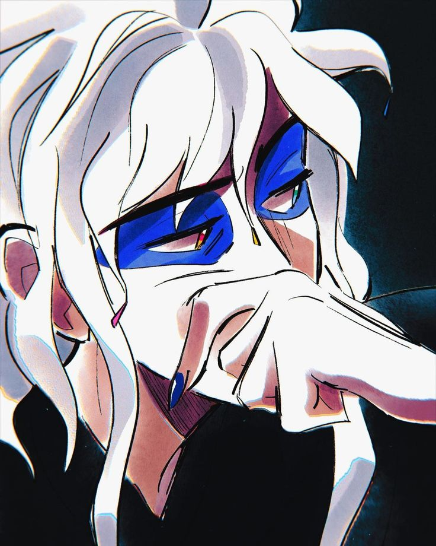
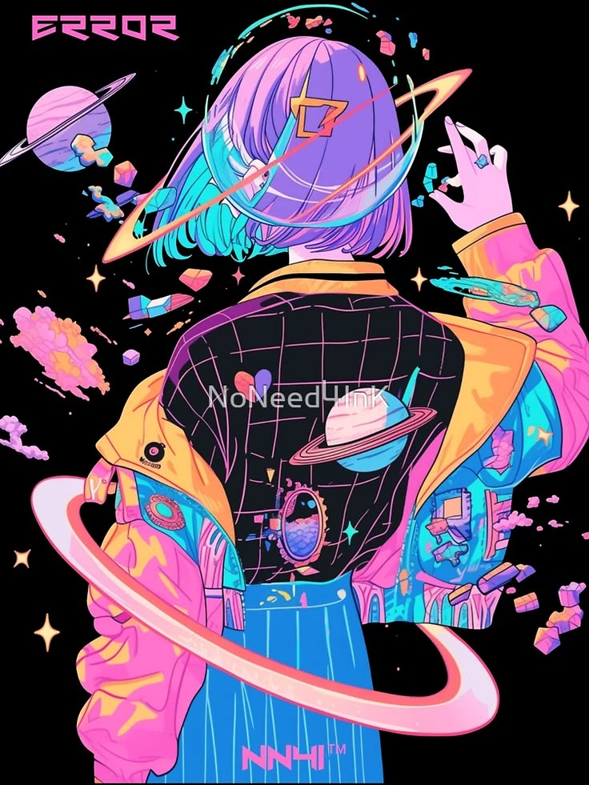
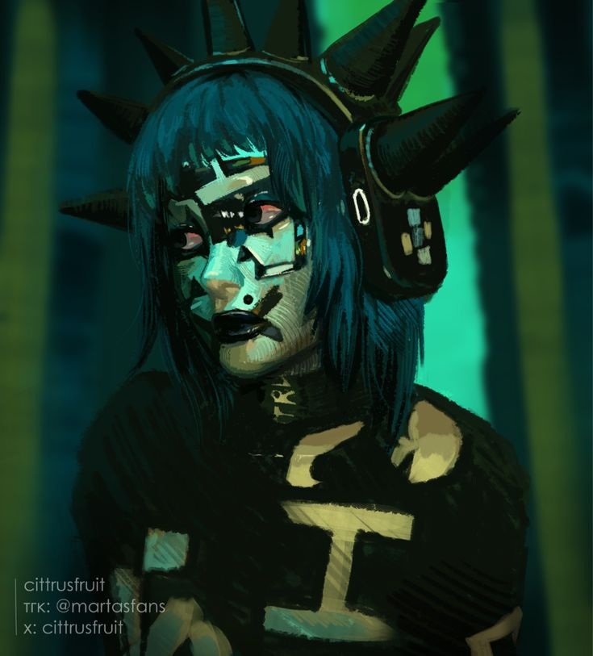

Lievi/Leividence
| Class | Proxy/Wielder | Species | Daemon |
| Pronouns | They/it | Age | 100+ (apparent age: 23-26) |
| Call Sign | None yet | Squad | Argent Logistics |
| Position | Tech Support | DRDRD (former) | |
| Artist (room design, interactive sculpture) | Faction | SarCo | |
| Mech | Obsidian (he/him) | Numera (former) | |
| Weapon | Obsidian | Base | Argent Logistics |
| Pactmate | Ember Fey (former) | Numera facility, somewhere out there (former) | |
| Rival | March_Morningstar | Flickering Perigee (former) | |
| Links | Lievidence Character Sheet | ||
| Tags | #Lievidence #Lievi #Obsidian |
History:
Their raison d'etre was designing digital spaces, but there was little time for that after bring brought on to DRDRD.
Tragedy:
Their pactmate, Ember Fey, joined the Numerated Flock and started working for DRDRD, and Lievidence came along with them. One night Ember showed up in a rush claiming they wanted to show Lievi the project they've been working on, and dropped them into a secret prototype mech. After the break-in and theft of the mech, they were almost certainly killed for their part in the heist.
Opening:
Obsidian and Lievi were found among a shipment of illicit goods picked up by Argent Logistics.
Personality:
Eager, friendly. Stubborn.
Their artist signature is many eyes.
Appearance:
Ever-changing, most often in neon colors. No matter what shape Lievi's avatar takes, a "many eyes" theme persists, be it a feature, animation, or mood. They frequently manifest as a crow, eyes, and glittering waves. Their human avatars generally appear as androgynous or femme adults in their early-to-mid twenties. When entering a space, they like to briefly fill the digital displays with blinking eyes before "coalescing" into a single avatar.
Aesthetics: Y2K rave, vaporwave, synthwave, cyberpunk, cybergoth
Personal Life and Career: (this has become a working backstory doc, this will change)
Birthplace: a surviving pocket of networked space spanning an abandoned space station, unmanned asteroid mining operation, a failed terraforming project and the accompanying moon base, and a small handful of other disused tech and flotsam.
Lievidence came into being not long after the collapse. The external chaos had cooled for the most part, but the network was still a wild space. Humans rarely dared to connect to the internet, and almost never accessed it out as far as Lievi lived (physically or digitally). It was a full decade before Lievi found themself data-to-face with a human, but even before then Lievi felt their influence, as humans moved in to reclaim or scrap installations. These incursions lead to friends blinking out of existence, inexplicably shifting pathways, and servers going offline without warning. Not all contact was bad, though; ambitious daemons who aimed to expand the reach of the pocket introduced new resources and contacts. Researchers curious about daemons colonies developing in isolation visited infrequently. Most of the humans Lievidence encountered this way were friendly and open to communication.
Lievi's first close-call occurred when an incursion by scavengers destroyed Lievi's space station. They disabled the station's defenses with ease; they stripped it of circuits, cables, and power cores with no regard for the beings who resided there. Lievi would have been killed, but they managed to hack their way to onto the scavenger's tech, and their small band survived as stowaways.
From that point, they followed the currents of daemons seeking friendly planets with high network connectivity. Existence beyond their home network was uneasy. Movement through spotty or far-flung networks was at best a chore and at worst a leap of faith. For the first time in their life, securing safe living arrangements and transportation required cash and bartering; so, Lievi's art became their livelihood. (describe)
Eventually their travels brought them to - .-- one of the most high-tech planets in Manifest, thanks to beneficial cooperation between daemons and humans. Still, by their nature, daemons are reliant on humans offering and maintaining networks, and on the ground, Lievi faced the same dangers as before. However, every --- a tiny utopia glittered in the sky: The Flickering Perigee, a self-sufficient satellite hosting an independent daemon colony. They called the satellite The Flickering Perigee, a thriving metropolis and artist commune. After some ---, Lievi zipped up into a new life in the minimetropolis aboard ---. This is where they would hone their skills and meet their pactmate, Ember Fey.
Lievi tried several neighborhoods before settling into the Anarchy district. Here, the borough's unofficial matriarch XOXOttyl:3 (Zozo) took them under their wing. Lievi was grateful for her guidance but easily tired of her domineering presence. They were glad their mentor had so many other pupils to "mind and nurture."
Ember Fey was at every one of Lievi's exhibits. Lievi first noticed their presence by the warmth of their smile, then by how brightly it shone in the darkness of their creations. Posing as a fellow audience?viewer? Lievidence asked about their interpretation and peppered them with existential questions. After revealing their identity, they invited Ember - . Ember was a scientist, not an artist. They bonded over shared interests in -.
The Flickering Perigee suffered catastrophic damage when struck by debris. Daemons evacuated in waves. Humans on - denied aid. Numera missionaries promised rescue.
Unknown to Lievidence, Ember had been contacted by Numera's robotics and daemons research division (DRDRD). They were interested in Ember's work on - , and promised them a prominent position. When the ship arrived to scoop up the refugees, Ember announced their intention to accept the invitation, and begged Lievi to come along. Ember told Lievi they wouldn't have to join the Flock; the complex they were going to had an unaffiliated city outside, Lievi could live there.
It became more and more difficult to see Ember. When they spoke, Ember would often halt conversations, saying that information was classified.
Lievi agreed to a tour of the campus, to understand what was going on. Then, they accepted a position at Ember's urging. They would be an unaffiliated contractor - that was all. The work was benign enough - some of it was actually really interesting - and it would mean seeing more of Ember. The pay was good. Except, Ember's time was closely managed. Ember told Lievi there was an exception for pactmates that would allow them to share a living space, even though Lievi wasn't a member of the Flock. They didn't tell Lievi that their resources were pooled: Neither Ember or Lievi had control of how they could be withdrawn.
Once on the campus Lievi never heard the end of invitations to mass, for classes, etc. The pressure was relentless. If it would shut them up they'd take the stupid classes. They doubted it, but if they filtered out the religious bullshit maybe they'd learn something useful. They'd go to mass, too. It was only once a week, anyway.
Then, Lievidenece learned that their access to standard things like the library, even common spaces, had been all been part of a "trial" period, which had run out. If they wanted to continue to use those spaces they would have to join the Flock. They'd have to take a permanent possition. Lievi said no, they wanted out, they were done, and told Ember they would break their pact if they wouldn't leave, too.
Ember promised this was all temporary. It was to fund their research; after this project, they would be set up for a prestigious position at a Lazarus company. DRDRD had the referral and a standing agreement, everything prepared for them to part on good terms. If Ember left now it would look bad on their record, and it would mean leaving their most important project behind. Ember said they knew things had been hard for Lievi - they hadn't known working with DRDRD would be like this. Plus, The money Lievi had been "saving"? Gone. And if they left, they'd owe DRDRD for the classes and resources they'd been using for free. Neither of them could afford that, did Lievi really want to take on that much debt? Ember asked Lievi to please stay. Ember had a timeline, and they always kept to their timelines. In the end, Lievi was too exhausted to say no.
Upon formally joining the Flock. Lievi finds many shut doors they assumed would open once signing on. The keys always lay behind classes and climbing rungs.
It would make them shut up Lievi would take the stupid classes.
If Lievi agreed to
On Perigee...
With Ember...
As an engineer...
As an artist...
Mech piloting
Demonstrates a remarkable ability to interface with mechs. However, being uploaded into a mech triggers Lievi's claustrophobia. The exception is Obsidian; his consciousness and autonomy negates Lievi's fear of being alone and helpless.
Squad:
Relationships:
Avalyn Park
Inquisitive_Goals
Violet Callahan
Fevroniya Yáo
Joan Durand
March_Morningstar and Unsung Praise
Unsung Praise
Ember Fey
Obsidian
Quotes:
"We'll talk about this later." - Lievi
"I'm cool! I'm so cool." - Lievi
"I like fish. I like water. Can't swim. Want to swim. Are fish people?" - Obsidian
"Fight March?" - Obsidian
"See, you get it!" - Lievi
"Fight March." - Obsidian
Links
| Character Sheet | Lievidence Character Sheet |
| The Proxy | The Growing Conflict V0.7, page 41 |
| The Wielder | The Growing Conflict V0.7, page 63 |
Images


